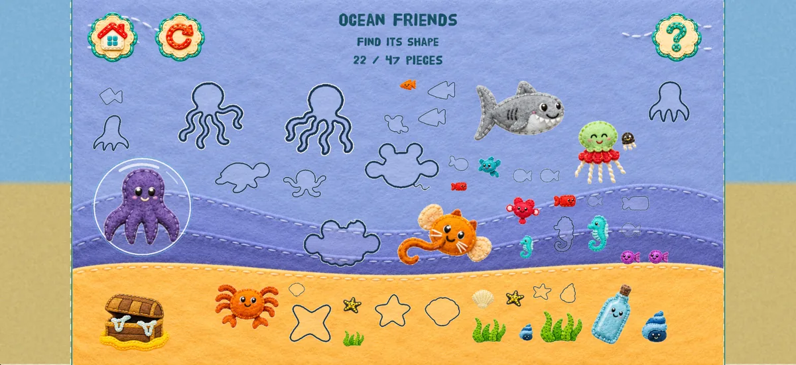

Сцены с подбором форм
Размещайте каждого фетрового персонажа на подходящем силуэте и собирайте сцену шаг за шагом.
Детская игра-головоломка · iOS
Мягкий мир из фетра с простыми головоломками для маленьких рук.
Mini Funny Puzzles — это детская игра с новым ярким дизайном в стиле фетра. Соединяйте формы, перетаскивайте ключ к коробке, открывайте небольшой memory и исследуйте дружелюбные сцены, такие как Ocean Friends, Little Animals и Fairy Garden.
Новый дизайн скоро появится ↓
Познакомьтесь с Mini Funny Puzzles
Текущая страница в App Store всё ещё использует прежний визуальный стиль. Новая фетровая версия, показанная здесь, сейчас готовится и будет опубликована по той же ссылке App Store.
Новая художественная подача превращает игру в мягкую фетровую коробку с игрушками, наполненную яркими цветами, дружелюбными лицами и понятными формами. Взаимодействия остаются простыми для детей, а сцены выглядят более аккуратно и увлекательно.
Размещайте каждого фетрового персонажа на подходящем силуэте и собирайте сцену шаг за шагом.
Наслаждайтесь темами Ocean Friends, Little Animals, Fairy Garden, Funny Monsters и другими.
Переворачивайте карточки и находите простые пары в спокойном интерфейсе для маленьких детей.
Встроенные покупки и внешние действия находятся в родительской зоне.
Чтобы открыть родительскую зону, кнопку нужно удерживать несколько секунд.





Mini Funny Puzzles создана для детей, а родительская зона отделяет действия, связанные с магазином. Там доступны дополнительные встроенные покупки для полной версии или дополнительного контента, и вход требует короткого удержания.
Сейчас Mini Funny Puzzles доступна в App Store через существующую страницу “Amazing Mini Puzzles Boxes”. Будущее фетровое обновление сохранит ту же ссылку App Store.